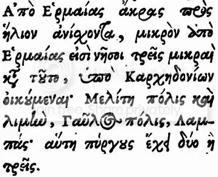

После рассмотрения некоторых греческих источников, в которых фигурировало название судна γαῦλος, обратимся к произведениям жанра, наиболее близкого всем романтикам независимо от возраста – жанра морских приключений. Они возникли, по-видимому, в Карфагене, где вплоть до арабского завоевания основная масса жителей осознавала себя ханаанеянами, т.е. финикиянами и говорила по-финикийски. (Шифман И. Ш. Угаритско-финикийская литература) . Одно из первых повестований такого рода – «Перипл» (от греческого περίπλους - переход по морю, плавание) Гимилькона сохранился благодаря римскому географу Авиену, оставившему его подробное изложение. В этой приключенческой повести рассказывается о путешествии к Британским островам и даже к берегам Америки (!). Перипл стал именем нарицательным для произведений такого жанра. Они содержали, как пишет Шифман, «разного рода устрашающие подробности, необычные явления природы; в связи с этим не лишне вспомнить, что карфагенские торговцы всеми средствами старались отвадить возможных конкурентов от излюбленных ими рынков.» Из этих «страшилок» затем вырос другой тип периплов – повестей , напоминающих выписки из вахтенных журналов путешественников Нового времени, в деталях описывающих особенности морского пути, подстерегающие мореплавателей опасности, места якорных стоянок и удобные рейды, наличие поблизости источников пресной воды и т.п. Именно к такой категории относится перипл, содрежащий описание побережий Средиземноморского бассейна, который первоначально приписывали греческому мореплавателю и географу IV в. до н.э. Скилаку Кариандскому. Носил он, по обычаям того времени, длинное название, которое начиналось так: ΣΚΥΛΑΚΟΣ τοῦ ΚΑΡΥΑΝΔΕΟΣ. ΠΕΡΙΠΛΟΥΣ ΤΗΣ ΘΑΛΑΣΣΗΣ ΤΗΣ ΟΙΚΟΥΜΕΝΗΣ ΕΥΡΏΠΗΣ, καὶ ΑΣΙΑΣ, καὶ ΛΙΒΥΗΣ; ... («Перипл обитаемого моря Европы, Азии и Ливии…»). Позднее было установлено, что это произведение не принадлежит Скилаку; анонимный автор лишь воспользовался его именем, а также некоторыми его сочинениями, наряду с работами других античных географов. Поэтому это сочинение, составленное в середине IV в. до н.э. стало называться «Перипл Псевдо-Скилака».
У Псевдо-Скилака нас будут интересовать два момента. Первый связан с финикийской принадлежностью γαῦλος. В п.112 мы читаем:
Οἱ δὲ ἔμποροι εἰσὶ μὲν Φοἰνικες· ἐπάν δέ ἀφίκωνται εἰς τὴν νῆσον τὴν Κέρην, τοὺς μὲν γαύλους καθορμίξουσιν…
А торговцы же – финикийцы; когда бы они ни прибывали на остров Керна, всегда заходили в гавань на своих γαύλους…
Здесь уже трудно возразить что-либо против самой тесной связи торговых судов типа гаулос с финикийцами. Что касается острова Керна, то мне (как я понимаю, и не только мне) не удалось с точностью установить его местонахождение. Есть множество вариантов. Поэтому можно остановиться на успокаивающей фразе из «Through the Pillars of Herakles: Greco-Roman Exploration of the Atlantic» Duane W. Roller’а (Taylor & Francis, 2006, p.37):
«Wherever Kerne was, it was significant enough to be known to the author of the Pseudo-Skylax Periplous in the fourth century ВС, so it remained an important Carthaginian outpost for some time.»
(Где бы ни находился остров Керна, он был достаточно значителен, чтобы о нем знал автор Перипла Псевдо-Скилака в четвертом веке до н.э. ; на протяжении некоторого времени он оставался важным аванпостом карфагенян.)
Второй момент, на котором стоит остановиться, прямо не связан с финикийскими судами типа гаулос, но он поможет нам установить другую связь – языковую.
В центральной части Средиземного моря между Сицилией и побережьем Северной Африки, лежит остров Мальта. О его роли в развитии галер Средневековья нам еще предстоит говорить очень много. Но сейчас речь о другом. В упомянутом Перипле Псевдо-Скилака есть такая фраза (п.111):
«От мыса Ермайя в направлении солнечного восхода, на небольшом расстоянии от Ермайи находятся три маленьких острова, населенных карфагенянами: Мелит, город с гаванью, Гаулос, город; Лампас, который имеет две или три башни.» (греческий текст приведен на рисунке).

Нас, естественно, интересует остров Гаулос. Это современный остров Гоцо, входящий в состав государства Мальта. Расстояние, на котором он находится он от главного острова страны – о.Мальта –составляет всего каких-то шесть километров. Но ведь как его называет Псевдо-Скилак – Гаулос! Всего-то несколько строк Перипла отделяет это название от названия финикийского корабля. Есть ли между этими словами связь? И почему остров сейчас называется Гоцо?
Дело в том, что примерно с 700 г. до н.э. на островах Мальта и Гоцо существовала финикийская колония. Около 500 г. до н.э. хозяевами этой колонии стали карфагеняне, о них и говорит Псевдо-Скилак в описании своего путешествия. А поскольку говорили в Карфагене по-финикийски (на пуническом диалекте), то сомневаться в том, что название острова «Гаулос» – это финикийское слово, вряд ли стоит. Тогда у нас появляются основания для утверждения, что и название корабля γαῦλος имеет финикийское происхождение.
Но как связаны Гоцо и гаулос? Для этого нам надо вспомнить историю острова. В 218 г. до н.э. он попал под владычество Рима и оставался в составе Римской империи до 535 г.н.э., когда перешел к Византии. В 870г. остров захватили арабы-аглабиды. Их правление привело к полному искоренению финикийско-пунического влияния, в том числе и в языке (нынешний мальтийский язык очень близок к северо-африканским диалектам арабского). При арабах и произошло превращение острова Гаулос в Гоцо (по-мальтийски Għawdex). Мне удалось найти у Эдварда Липиньского (Edward Lipiński , «Semitic Languages: Outline of a Comparative Grammar», Peeters Publishers, 2001, p.143) объяснение этого превращения. Он считает, что имел место сдвиг l > d, не очень частый в семитских языках, но тем не менее встречающийся. В качестве примера приводится сдвиг в названии статуи финикийского бога Баала (Ваала, Балу) ṣdmb'l < ṣlmb'l, и в том, что древний город арамейцев Арабелла изменился на Ирбид (Иордания): Arbel > Erbed > Irbid. Поэтому и выстраивается цепочка gwl > Gawal'm >Γαυλοσ > Għawdex.
Итак, γαῦλος произошло от финикийского gwl. Здесь мы подошли почти вплотную к разгадке всей этой запутанной истории.
Почти во всех переводах и комментариях к текстам, содержащим γαῦλος, приводится определение этого термина: «круглое» (round-built) финикийское купеческое судно. Это определение не подкрепляется никакими источниками, кроме этимологии gwl > γαῦλος. По этому поводу можно привести харктерный комментарий W. W. How и J. Wells к Геродоту: «The γαῦλος was a round-built merchant-vessel … the word (cf. <*> gôl = rotāre) is probably Phoenician, and = ‘anything round’. It is distinguished by the accent from γαυλός, a bucket (VI. 119).»
Чтобы закончить с этой частью записок, приведу интересное, на мой взгляд, соображение относительно того, всегда ли были финикийцы хорошими мореходами. Кажется, Б.А.Тураев первым заметил, что в мифах и сказаниях финикийцев отсутствуют морские боги. Нет там и покровителей морской торговли. На этом основании Тураев делает вывод, что финикийские божества, и, более того, все ханаанейские боги «вышли из пустыни». Интересный факт. Мы его еще обсудим, когда, даст бог, будем говорить о мардаитах.